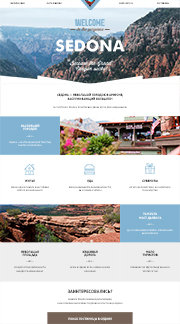

Sedona
Выпускной проект интенсива от HTML Academy. Верстка на флоатах, чекбоксы, всплывающее окно бронирования.
Ссылка + Репозиторий проекта на GitHub +Семантическая верстка, грамотный и чистый код, прогрессивное улучшение. HTML и HTML5, CSS и CSS3, JavaScript и jQuery.
Быстро и с удовольствием учусь, хочу работать в сильной команде над интересными проектами. Ищу работу или стажировку HTML-верстальщика или junior-разработчика.
Выпускной проект интенсива от HTML Academy. Верстка на флоатах, чекбоксы, всплывающее окно бронирования.
Ссылка + Репозиторий проекта на GitHub +Самостоятельно выполненный проект по макету от HTML Academy. Сетка на flexbox, чекбоксы, радиобаттоны, меню-слайдер на CSS, слайдер и окно обратной связи на JS.
Ссылка + Репозиторий проекта на GitHub +